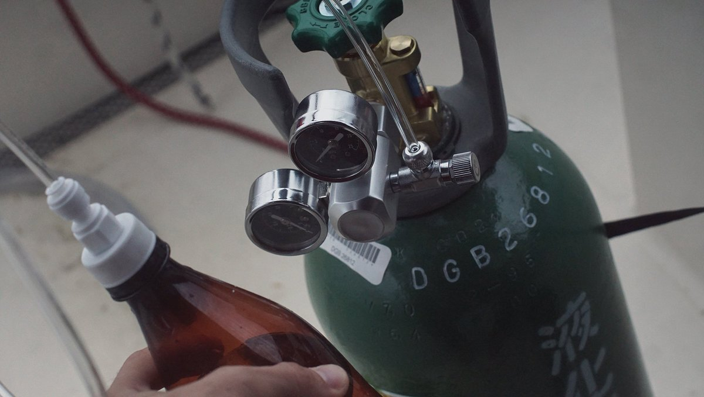
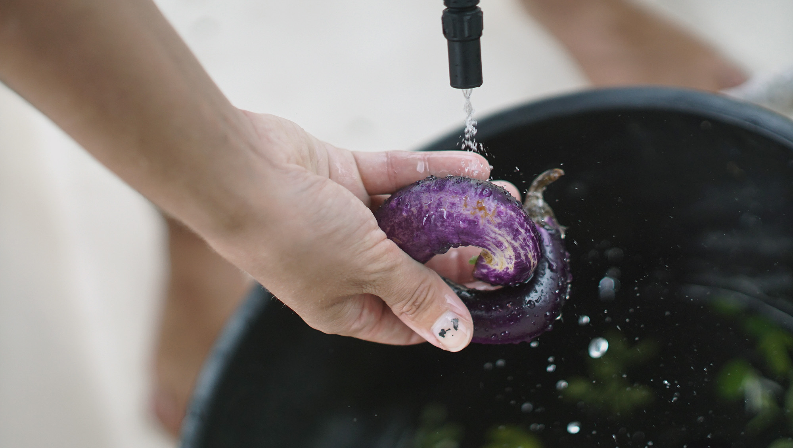

liveaboard
- kitchen tools
- diy carbonation system
- habitat
- washing fresh produce
- toilet
- costs
- navigation
- night time
- weather
- water storage
- electricity
- radio
- comraderie
- schedules
- privacy
- laundry
- washing dishes
kitchen tools

Choose quality tools that don't require electricity, that have few components(like unibody knives) and made of materials that will last – or that can be composted. For cooking, we have:
- 1x Large mortar and pestle(marble)
- 1x spatula(bamboo)
- 1x Vegetable cleaver(stainless, unibody)
- 1x Serrated knife(stainless, unibody)
- 1x Julienne slicer(stainless)
- 1x Baking tray
- 2x Cooking pans(Non-stick & cast iron)
- 1x Manual coffee grinder(ceramic)
- 1x Manual spices grinder (ceramic)
- 3x Cooking pots(small, medium & large)
- 4x Measuring cups(stainless)
- 1x Large bowl for bread making(stainless)
- 1x Pressure cooker(non-electric)
- 1x Rolling pin(unibody, wood)
- 1x Claw-shaped can opener
- 1x Potato masher
diy carbonation system
We do enjoy having some fizzy water now and again, but hate to have to purchase bottles for it. We decided against getting a soda stream given the fact that its bottles are proprietary and cannot be filled by anyone other than them. Making your own system is way better, and if you've got a big tank it'll last for a long, long time.
Here's what you'll need to get, this is also the order in which you need to connect them together:
- 5KG CO2 tank
- A regulator
- 1m of of vinyl tubing
- A ball-lock keg coupler
- A carbonator bottle cap
- A soda bottle (for carbonation with a reinforced bottom).
For a full tutorial, check out this site.
habitat
As with most things in life, 20% of anything does 80% of the work. When moving into a smaller space, it is important to find that 20% and surround yourself with things purposefully. Single-serving tools and kitchenware will not do.
Investing in good quality army blankets and waterproof sleepingbags will make a world of difference. Non-metallic(bamboo or ceramic) kitchenware is also essential, everything rusts on a boat - even stainless-steel. To keep our clothes dry, we store them in large sealed industrial plastic containers.
washing fresh produce
After buying fresh produce at the market, I wash everything with baking soda. If there's a lot of dirt, I scrub them with a brush. The mechanical rubbing action and rinsing is very good at removing pesticides. Then finally, I rinse them off with fresh running water and let them dry in the sun. They need to be completely dry, otherwise they may rot faster (moisture accelerates rot).
Washing your produce in baking soda prevents foodborne illness and substantially reduces your exposure to pesticides, it is more effective than using a vinegar solution (because it needs to be used full-strength, and that can get expensive). This washing technique is the same for fresh greens and fruits, although for berries, it is best to wash them right before you plan to eat them.
toilet
We have a salt-water head which looks much like a household toilet, but with a handle on the side, that pumps water in and flushes it out into a holding tank. The holding tank can be emptied in the ocean when far from shores, or at marina pump-out station for free. The latter option being the best, seeing as how pump-out stations also have fresh water hoses, which can be used to flush out the tank.
An ideal setup, would be a composting head. While being odorless, it frees up a lot of space on your yatch for more important things than fluids and excrement, like water.
costs
Living at anchor - that is, in a bay somewhere tethered to the earth with ground tackle, is usually free. Some bays will have moorings installed, that can be used for a small fee (often around 10-15$.) Marinas often have guest docks with power, wifi and showers, for a medium-to-high cost (400$-600$.) The longer the boat though, the bigger the cost. Some marinas though, charge per dock space rather than boat size, beware of these places.
navigation
The entire task of navigation rests upon the Navionics app, installed onto all of our mobile devices. Its depth maps, compass, GPS, waypoints, community edits, and more, are all the features that we could ever wish for to get from A to B, over water.
night time
During long passages, we must sail throughout the nights. Our pattern, for two crew, is one sleeps between 1900 and 2100, then sails between 2100 and 2400, then goes back to sleep from 2400 until 300, and then goes back to the wheel between 300 and 600.
During these long nights, we listen to countless podcasts and audiobooks, which we discuss around breakfast in the morning. If we're feeling especially tired, listening to upbeat music, as opposed to spoken content helps.
During long passages, our daytime sailing occupations include: cooking, cleaning, doing fixes on the boat and brainstorming on future projects. We don't have a tight schedule for watches, we hand the wheel to the other as we get tired.
weather
Our favourite weather service is Windy, and while underway, we download weather maps(.grb files) through the saildocs service with our Satellite Phone which we then process with PredictWind. We pick our weather carefully on passage, no sense in taking unnecessary risks.
water storage
Our main tank carries 170L, while an additional 150L is stored in jerry cans. When it is not possible to dock at a marina, we use smaller(4x10L) jerry cans to ferry water from shore. While it requires more trips, the lighter containers are less prone to breakage.
electricity
We have 4 Solar Panels(1 x 60W, 1 x 100W and 2 X 90W). For additional power, we also carry a Honda EU1000i generator. Our boat has a 75AMP Balmar alternator, but it is only used when we need to use high-power systems like the macerator, or if we need to charge the batteries by other means on a cloudy day. Every single light is LED, cutting down the consumption of power, from lights, by 10 compared to halogens.
radio
As a sailor, you must offer help to a boat in trouble. Radio communication is key, specific channels are used in every country for emergencies or information exchange. Every morning, sailors will tune in to a specific channel and listen to a morning net, a public radio exchange in which the weather and local events are announced, as well as boats seeking crew, or items that need to be sold or found. When the weather is foul, the local channels are very busy.
comraderie
There is an unspoken understanding between sailors, an exchange of looks when foul weather is amidst. Every member of the sailing community knows the difficulties of life at sea, and is ready to lend a hand. We refer to each other by boat name, and like bird-watchers, we can identify rare breeds by sight. When transiting through world routes, we meet the same boats often, thus strenghtening the connection.
schedules
We sail on a loose schedule, our movements are tied to the weather. We follow the seasons and prevailing tradewinds to save on fuel and to avoid seasonal storms. We make stops to take on provisions and to rest.
privacy
There is non. It's something you must prepare for. If you have plans to travel for extended periods of time with another person, you must be compatible, you must discuss problems when they arise and express concerns right away.
The combined space, below and atop deck, is bigger than it seems. If you are near land, there is always the option of going for a walk.
laundry
In populated cities, laundry can be carried ashore to a laundry mat. In the south pacific, we do our own washing. We use rain water to wash our clothes by hand, using a set of buckets and a brush. The clothes are brushed and washed in soapy water once, then rinsed in fresh water.
When underway during long passages, we do a salt water wash to save water and rinse with fresh water. The clothes is hung out to dry on the lifelines, or on a separate line that we set up. Leaving dark clothes out to dry in the sun will cause it to discolour faster - such is the cost of sailing in warm places.
We like to wash our clothes a homemade mixture of grated soap (2 bars), washing soda (250 g), vinegar (250 ml) and baking soda (100 g).
washing dishes
Dishes can be cleaned effectively with boiling water, baking soda and some vinegar. It's non-invasive, non-toxic to marine life and is great at removing fat and dirt. The dishes are then left to air-dry outside in the sun. When water is scarce, we clean/rinse the dishes using salt water scooped up from the side of the boat (using a bucket attached to a rope), we also try and use rain water, as much as possible.
The fresh-water foot pump pulls water from our tanks and dispenses it to the galley's sink at the rate of approximately a 1/4 cup per push. This system allows us to calculate water-consumption and storage.
If you like our content, consider supporting us on...
PATREON